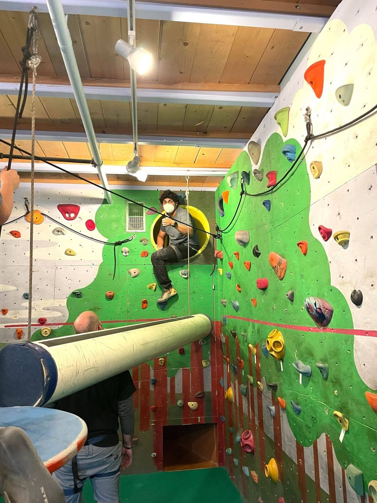
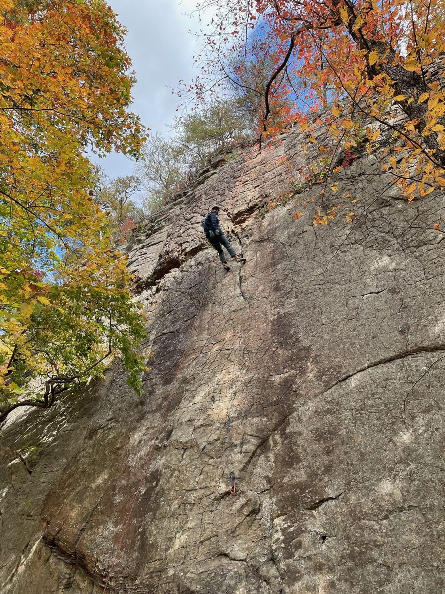
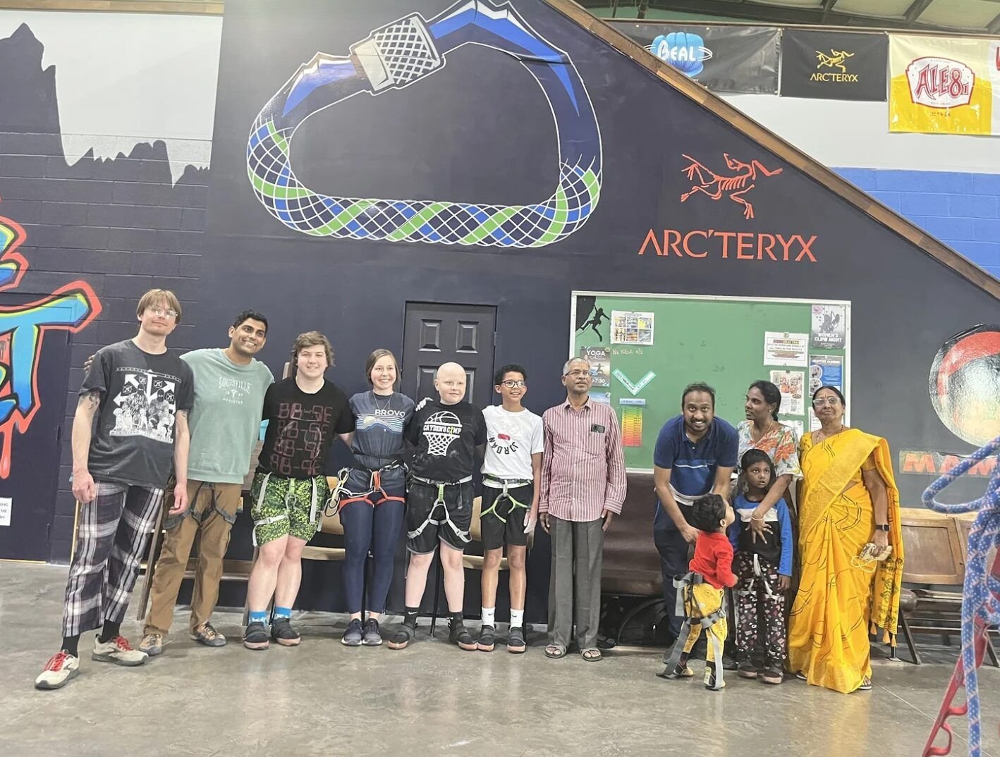

Rock Cancer
Board Member · Ann Arbor, MI & Louisville, KY · 2022 – Present
What is Rock Cancer
Rock Cancer offers free rock climbing sessions to young patients aged 4-25 battling cancer or with a history of cancer, along with other chronic medical conditions. Hosted every third Friday at Planet Rock Ann Arbor, this program empowers participants to reclaim their strength, enhance their range of motion, and rebuild confidence post-treatment. Beyond climbing, Rock Cancer serves as a beacon of hope and resilience, celebrating the unstoppable spirit of its young climbers.
Free Rock Climbing, Community Support, and Ice Cream! The perfect Trio!
At Rock Cancer, I serve on the board, where I maintain the website for all of our chapters, built our merchandise store, and recruit volunteers for belaying and behind-the-scenes work like marketing. I also have the privilege of volunteering as a belayer myself. This allows me to be directly involved in the transformational journeys of young climbers. I've witnessed the incredible progress and resilience as they conquer the rock wall.
Rock Cancer is more than just a program; it's a community where every member plays a crucial role. From the climbers rediscovering their strength to the supporters ensuring we can continue our work, we're united by a shared belief: that every challenge, no matter how steep, can be overcome with determination and the support of those around us.
NBC Nightly News Segment about Rock Cancer
mLive Video about Rock Cancer
Some Pictures of Rock Climbing



Drag to spin · click a photo to enlarge
Support Rock Cancer
Your support helps provide free climbing experiences to patients. Consider making a donation to help further the cause.
Rock Cancer Website